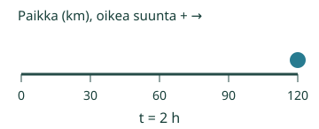
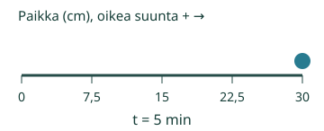

Aava yhdistää mittanauhan ja kellon yksiköt.
Muodostan nopeuden yksikön matkan ja ajan yksiköistä.
Mistä tämä nähdään?
Luvut ja yksiköt jaetaan erikseen
Mittanauhalla saadaan12 m, kellolla4 s. Kun matka jaetaan ajalla, luvut antavat12/4=3. Yksiköt antavat m/s. Yhdessä 3 m/s: tasaisessa mallissa joka sekunti kuljetaan3metriä. Kauttaviiva ei tarkoita kertomista.
Sama rakenne eri mittayksiköillä
120 km ja2 h antavat60 km/h. Matkan yksikkö km jää jaettavaksi ja ajan yksikkö h jakajaksi. h/km kuvaisi aikaa matkaa kohti, ei kysyttyä nopeutta. Pelkkä km on matkan yksikkö.

Etanan oma mittaus
30 cm viidessä minuutissa antaa30/5=6 ja cm/min. Ei tarvitse ensin muuttaa metreiksi ja sekunneiksi. Tasaisessa mallissa6 cm/min tarkoittaa6senttimetriä minuutissa.
Ennakoi: jos kohde ei liiku4sekunnissa, katoaako nopeuden yksikkö? Ei:0 m/4 s=0 m/s.
Kokeile itse
Etanan matka on 30 cm ja aika 5 min. Kirjoita nopeuden yksikkö näistä mittayksiköistä.
Ajattelun tueksi
Kirjoita matkan yksikkö ensin ja ajan yksikkö sen alle: m/s, km/h, cm/min tai m/min tilanteen mukaan. Myös m·s⁻¹ tai m s^-1 tarkoittaa m/s. Tuettu kirjoitusasu käyttää näitä yksikkömerkkejä; sanoja ei tarvitse kirjoittaa tai lausua. Jos käytät toista nopeusyksikköä, se voi olla muunnettavissa mutta tehtävä pyytää annettuja yksiköitä.
Tehtävän tiedot riittävät vastaamiseen. Malli on erillinen vapaaehtoinen tutkimus, eikä toistoa tarvitse katsoa loppuun.
Lisää tutkittavaa
Muuntaminen on eri vaihe kuin yksikön johtaminen. Kun tarvitaan muunnos:1 m/s =3600 m/1 h =3,6 km/h, koska1 h=3600 s ja1000 m=1 km. Tässä esityksessä sekunnin matka toistetaan3600kertaa tunnissa. Käänteinen muunnos jakaa3,6:lla.
Yksiköt cm/min ja m/s kuvaavat samaa suurelajia, mutta niissä sama lukuarvo ei merkitse samaa vauhtia. Harjoitus pyytää käyttämään annettuja mittayksiköitä ilman muunnosta. Malli ei vaihda niitä salaa.

Opettajalle ja ilman ruutua
Luokat7–9. Kanoninen rooli atomic. Tavoite: Johtaa nopeuden yksikön matkan yksikkö/ajan yksikkö ja tulkitsee per-merkinnän. Ei edellytä muuntokertoimen muistamista. Required-esitietoryhmät säilyvät: PHY79-SPEED-CONCEPT, PHY79-QTY-01. Vahvat tuet eivät muutu lisäporteiksi.
Kirjoita matkan lukuarvo ja yksikkö omalle kortille ja ajan tiedot toiselle. Muodosta niiden osamäärä. Vaihda vain mittayksiköitä, selitä tarvittavat muuntokertoimet. Nopeus0 saa saman yksikön kuin muu nopeus. Palojen vakioliike on idealisoitu.
Tämä sivu toteuttaa viisi nimettyä tasaista yksiulotteista liikettä yksikköpareissa m/s,km/h,cm/min,m/min. Jokaisessa mallissa yksiköt säilyvät samoina; aika on2 h,4 s tai3tai5 min mallin mukaan. Ei kitkaa,2D-kaarteita, mielivaltaista reittiä tai käyttäjän tuomaa mallikuvausta. Puuttuva tai tukematon valinta ei korvaudu oletuksella. Fyysinen pysähdys on mallin nollanopeusjakso; Toiston Tauko on vain katselun ohjaus. Mallin aika ja ruutuaika ovat erilliset. Kuljettu matka on aina ei-negatiivinen, suunnattu paikka/nopeus voi olla negatiivinen. Tämä esittää matemaattisen idealisoinnin, ei toteutettua koetta.
Vastaus on paikallinen matalan panoksen harjoitus. Avun käyttö tai mallin katselu ei osoita itsenäistä, viivästettyä tai formaalia hallintaa. Ei oppijahistoriaa, verkkotallennusta, aikarajaa, pakollista puhetta, nimeämistä tai kuuntelua. Ihmis-/oppilas-/oppimisteho-/manuaalinen saavutettavuus- tai julkaisuhyväksyntä ei synny tästä tarkistuksesta.
Lopuksi: Mittaa matka metreinä ja aika minuutteina. Miten johdat nopeuden yksikön ja miten luet sen sanallisesti?